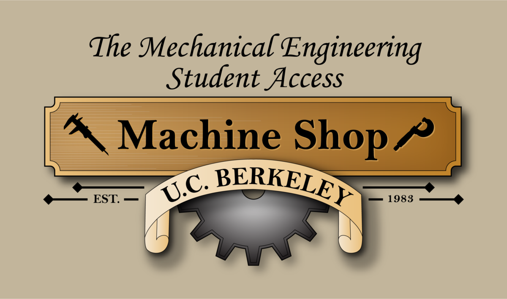
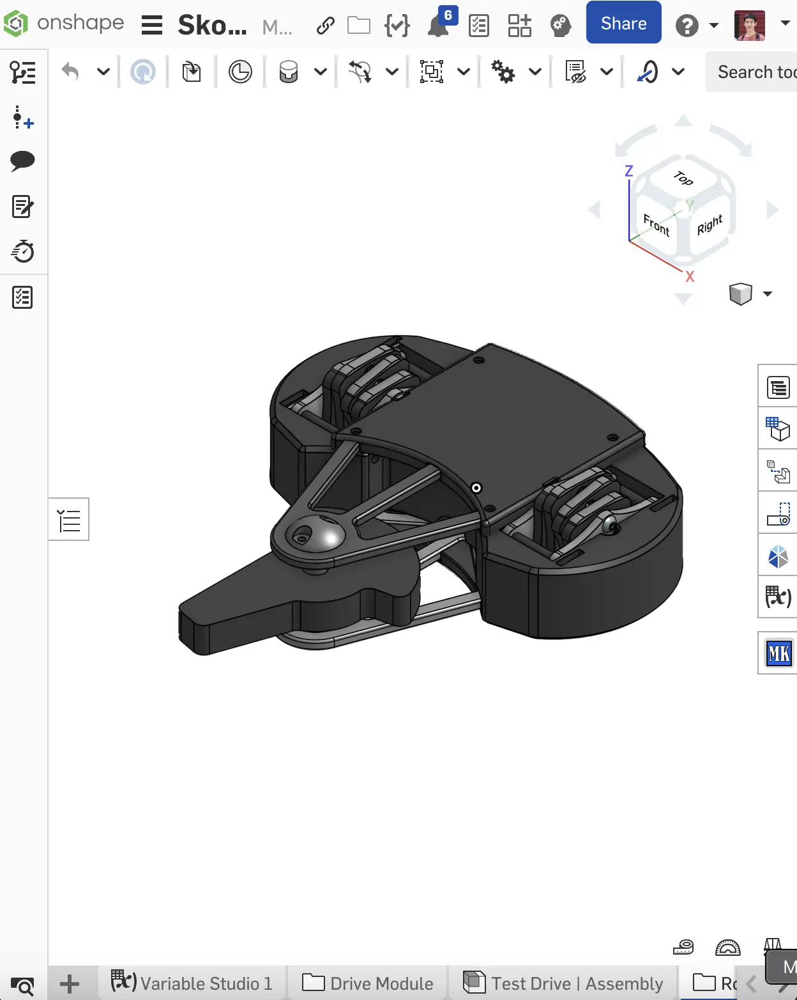
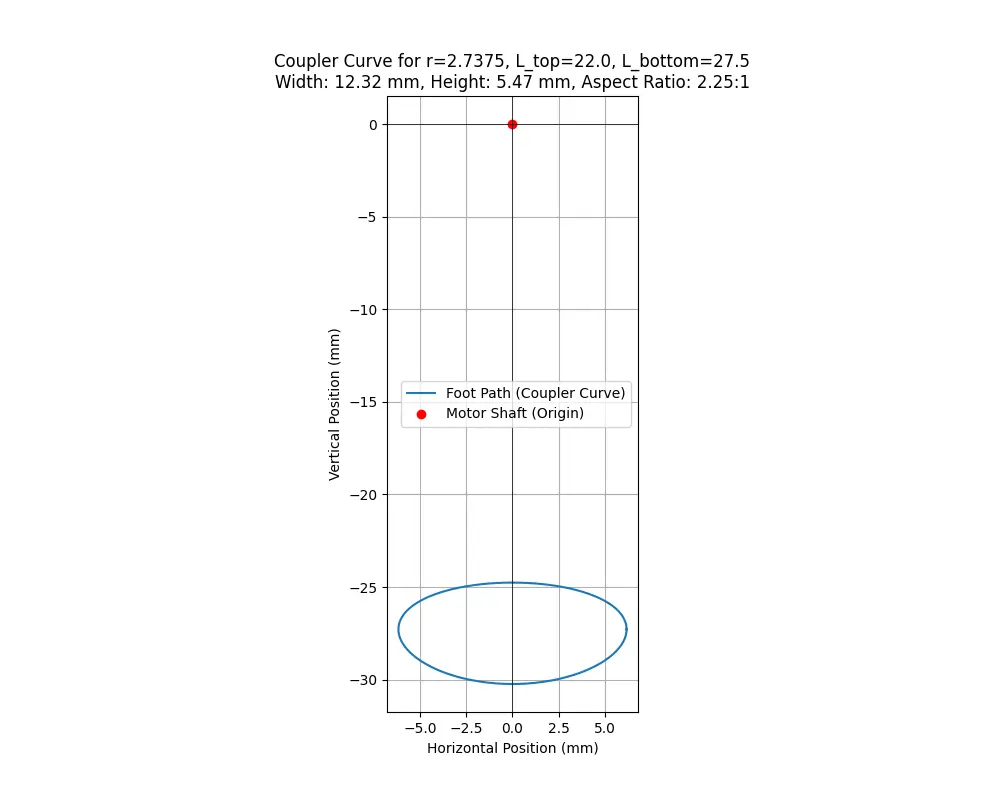
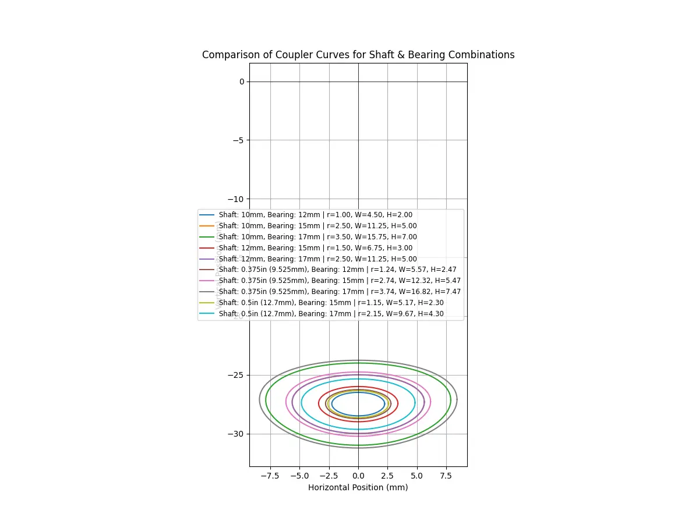

2025 | 1lb Plastic Antweight

Why re-engineer the wheel? For the added weight bonus of course! Non-traditional drive bases may not be common, but provide an engineering challenge in design, reliability, and packaging. While less common in tye antweight category compared to heavier weight classes, this shuffle drive was designed specifically for the limitations of the plastic antweight class.
RECORD
0 - 0
TOOLS



Onshape CAD
Project Overview
I was inspired by the likes of Silent X and Monkfish, who used various configurations of shuffler mechanisms in exchange for increased weapon mass without significantly sacrificing mobility. These two robots took various design approaches to shuffler, with Monkfish prefering large modules that rotate less frequently but with a greater step distance, whereas Silent X's modules shuffle smaller increments at much faster rates.
The overarching mechanism for shuffler drives are very similar to how crankshafts work combustion engines. A continuous input is broken down into separate offset inputs that are spaced evenly apart. (Source: Wikipedia)
Shuffler Geometry
The core of the shuffle mechanism is a four-bar linkage system driven by a crank. The path of the foot is a coupler curve determined by the lengths of the rotating crank (r), the connecting rod (l1), and the leg link (l2). The goal is to create a path that is flat and long on the bottom (for ground contact) and high and fast on the top (for the return stroke). By modeling the kinematic equations, it's possible to optimize the link lengths to achieve the desired motion.
Modeling
The core of the shuffle mechanism is a four-bar linkage system driven by a crank. The path of the foot is a coupler curve determined by the lengths of the rotating crank (r), the connecting rod (l1), and the leg link (l2). The goal is to create a path that is flat and long on the bottom (for ground contact) and high and fast on the top (for the return stroke). By modeling the kinematic equations, it's possible to optimize the link lengths to achieve the desired motion. The graphs below illustrate how changing the linkage geometry impacts the foot's travel path, allowing for optimization of step height and stride length for maximum speed and stability.
The Python script implements these equations in the calculate_coupler_curve function. This function acts as a digital simulation of the physical leg. For any given angle of the motor's crank (theta), it uses the lengths of the linkage arms (r, l_top, l_bottom) to calculate the precise horizontal (x) and vertical (y) coordinates of the foot. By running this calculation for a full 360-degree rotation, we can trace the complete walking path, known as a coupler curve. This simulation allows for rapid digital prototyping to find the optimal geometry for stride length and step height, as shown in the analysis graphs below.

Movement Path Analysis

Geometry Optimization
The graphs illustrate how changing the linkage geometry impacts the foot's travel path. Using this, we sought to maximize the step distance while keeping the overall package as small as possible, since the total height needed would already be quite among plastic antweight robots.
Planning
The cad process was slightly different for this project. Individual drive segments were developed seperately from the rest of the robot, and later integrated together. This meant that the master top and side view sketches give a spaceclaim requirement that the modules have to fit inside.
From there, the rest of the side/top view sketches defines the critical dimensions and locations of all major components, including the motors, weapon assembly, and linkage pivot points. Every other part in the assembly is parametrically linked back to this master sketch.
Fabrication
A key challenge for any shufflebot is achieving sufficient grip, as standard 3D printing filaments like PLA are too hard and slippery. To overcome this, the robot's feet were printed on a Formlabs stereolithography (SLA) printer using their 40A flexible resin.
This material has a Shore hardness of 40A, similar to that of a pencil eraser, providing exceptional grip on the arena floor. This allows the robot to transfer the full power of its drive system into forward motion without slipping, which is critical for pushing opponents and maintaining control during a match.
Testing
In progress! Check back soon for updates.